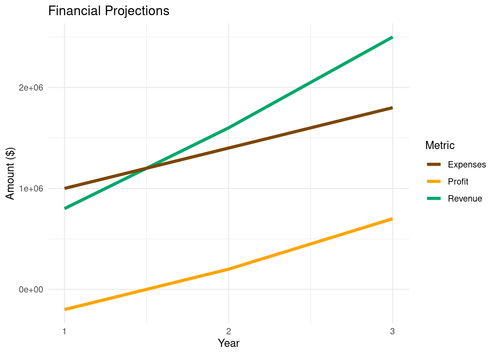
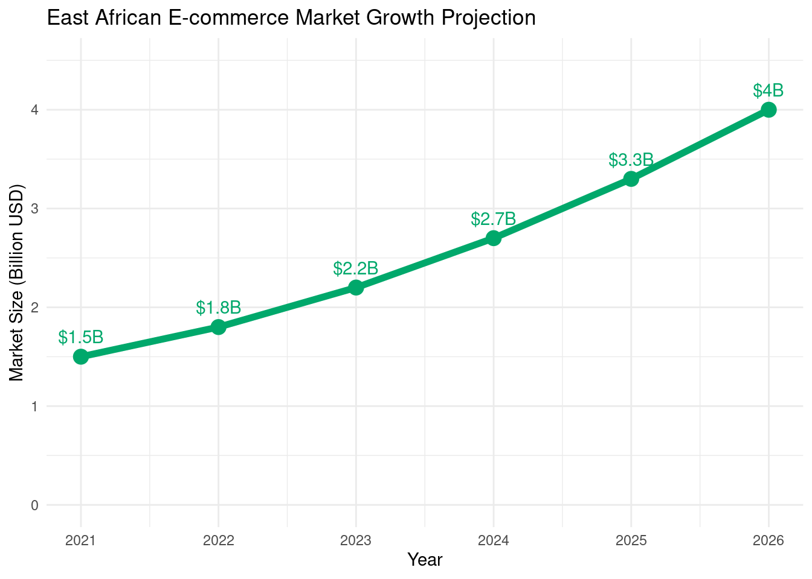
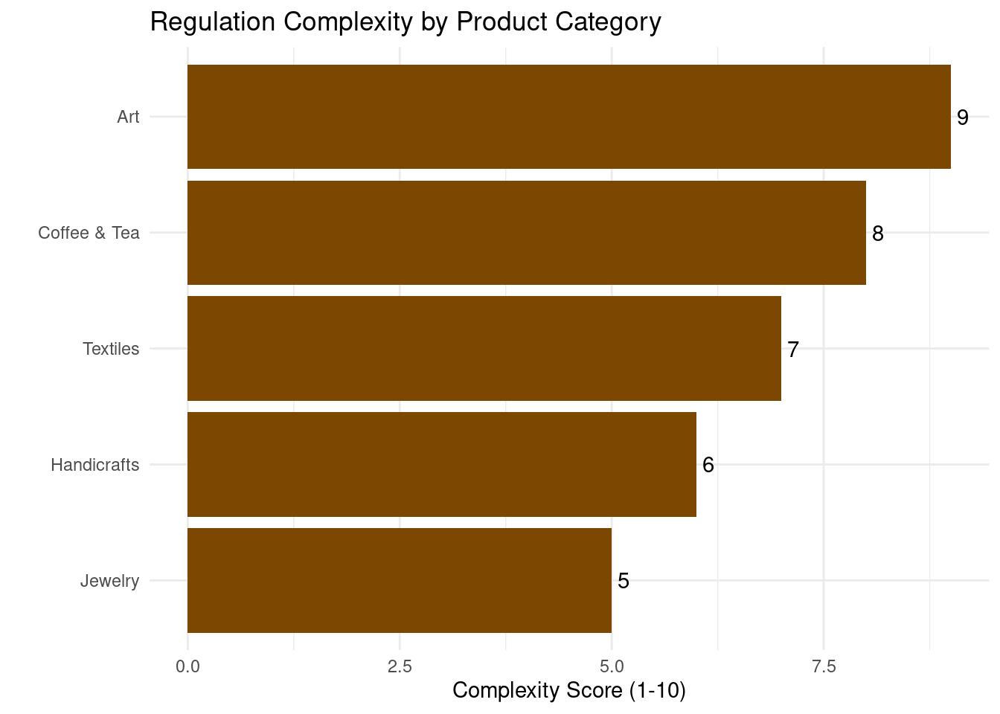
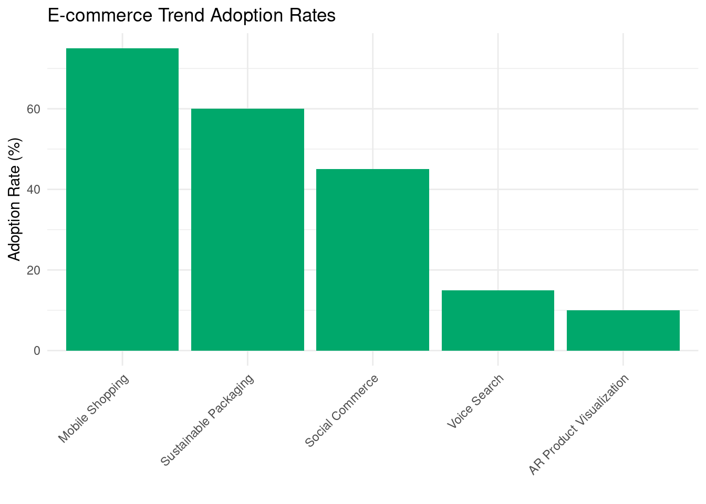
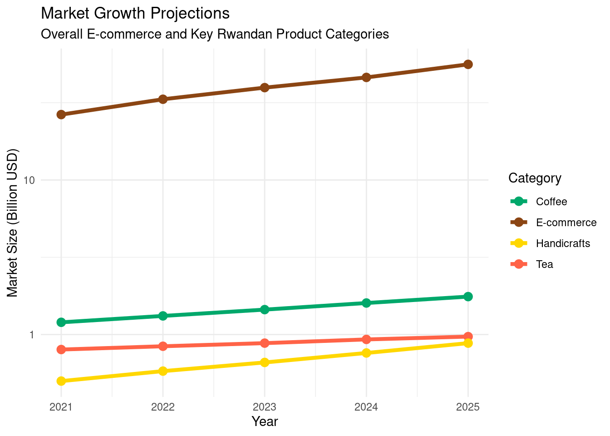
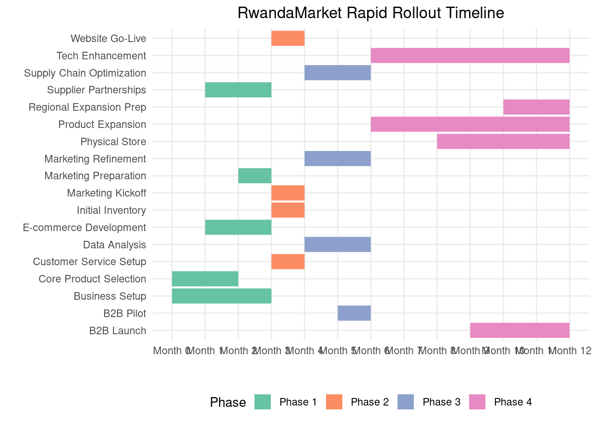

Executive Summary
RwandaMarket is an innovative e-commerce platform and physical store network that brings premium Rwandan products to the Nairobi market while offering cutting-edge B2B solutions for cross-border trade.
Key Points
- Target Market: Middle to upper-class Nairobi residents, expatriates, tourists, and businesses engaged in East African trade
- Unique Value Proposition: Authentic Rwandan products combined with advanced technology for seamless shopping and trade facilitation
- Revenue Streams: B2C product sales, B2B services including trade facilitation and market intelligence
- Technology Focus: R-based analytics for personalization, inventory management, and market insights
- Funding Requirement: $1.5 million for startup costs and initial operations
Company Description
Mission Statement
To bridge cultures and empower artisans by bringing the best of Rwanda to Nairobi, powered by cutting-edge data science and technology.
Vision Statement
To become the premier platform for cross-border trade in East Africa, known for quality products, technological innovation, and positive social impact.
Company History and Background
RwandaMarket was founded in 2024 by a team of entrepreneurs passionate about East African trade and technological innovation. The idea was born from recognizing the untapped potential of connecting Rwandan artisans with the growing Kenyan market, all while leveraging cutting-edge data science to optimize operations.

Legal Structure and Ownership
[PLACEHOLDER: Legal structure details to be finalized]
RwandaMarket is structured as a [PLACEHOLDER: legal entity type] registered in Kenya. The company’s ownership is distributed as follows:
Location and Facilities
Headquarters
Our main office is located in the heart of Nairobi’s business district:
[PLACEHOLDER: Exact address]
This central location allows us to easily connect with our customers, partners, and the broader business community.
Flagship Store
Our physical retail presence is anchored by our flagship store:
[PLACEHOLDER: Store address]
This store showcases our full range of Rwandan products and serves as a cultural hub for events and workshops.
Warehouse and Distribution Center
To ensure efficient order fulfillment and inventory management, we operate a state-of-the-art warehouse:
[PLACEHOLDER: Warehouse address]
This facility is equipped with advanced inventory tracking systems and optimized for quick order processing and shipping.
Core Values
- Cultural Appreciation: We celebrate and promote Rwandan culture and craftsmanship.
- Technological Innovation: We leverage cutting-edge technology to enhance all aspects of our business.
- Ethical Trade: We ensure fair compensation and sustainable practices throughout our supply chain.
- Customer-Centricity: We prioritize customer satisfaction in both our B2C and B2B operations.
- Continuous Learning: We constantly seek to improve and adapt to changing market conditions.
RwandaMarket stands at the intersection of tradition and innovation, bringing the best of Rwanda to Kenya while setting new standards for cross-border e-commerce in East Africa.
Market Analysis
1. East African E-commerce Landscape
The East African e-commerce market is experiencing rapid growth, driven by increasing internet penetration, smartphone adoption, and a growing middle class. This analysis focuses on the opportunities for RwandaMarket in facilitating trade of Rwandan products to the Kenyan market.
1.1 Market Size and Growth Projections

The East African e-commerce market is projected to grow from $1.5 billion in 2021 to $4.0 billion by 2026, representing a CAGR of 21.7%.
1.2 Key Market Drivers
- Increasing Internet Penetration: Expected to reach 50% across East Africa by 2025.
- Smartphone Adoption: Projected to grow to 65% of all mobile connections by 2025.
- Growing Middle Class: Estimated to reach 15% of the East African population by 2030.
- Improved Logistics: Investments in infrastructure enhancing last-mile delivery capabilities.
- Government Initiatives: Supportive policies promoting digital trade and cross-border e-commerce.
2. Target Market Segments
RwandaMarket’s target market can be segmented into two main categories: B2C and B2B.
2.1 B2C Segment
- Urban Professionals (25-45 years)
- High disposable income
- Tech-savvy and frequent online shoppers
- Interest in unique, high-quality products
- Expatriates and Tourists
- Seeking authentic African products
- Higher willingness to pay for quality and uniqueness
- Conscious Consumers
- Interested in ethically sourced and sustainable products
- Willing to pay premium for products with a story
2.2 B2B Segment
- Retail Businesses
- Small to medium-sized retailers in Kenya
- Looking to diversify product offerings
- Hospitality Industry
- Hotels, resorts, and lodges
- Seeking unique, local products for guest experiences
- Corporate Gift Market
- Companies looking for unique, high-quality corporate gifts
- Emphasis on products that reflect African culture and craftsmanship

3. Competitor Analysis
3.1 Direct Competitors
- Jumia Kenya
- Strengths: Wide reach, established brand
- Weaknesses: Less focus on artisanal products
- Kilimall
- Strengths: Strong in electronics and fashion
- Weaknesses: Limited offering in authentic African products
- Masoko (by Safaricom)
- Strengths: Backed by major telecom, integrated M-Pesa
- Weaknesses: Newer to the market, still building product range
3.2 Indirect Competitors
- Traditional Markets and Souvenir Shops
- Strengths: Physical presence, haggling experience
- Weaknesses: Limited reach, inconsistent quality
- African-Focused Etsy Sellers
- Strengths: Global reach, unique products
- Weaknesses: Higher shipping costs, longer delivery times
- Local Rwandan Product Exporters
- Strengths: Direct sourcing relationships
- Weaknesses: Often lack e-commerce capabilities
3.3 Competitive Positioning Map

4. Consumer Behavior Insights
4.1 Key Purchasing Factors
- Authenticity: 78% of surveyed consumers value product authenticity
- Quality: 85% prioritize quality over price for artisanal products
- Story: 62% are more likely to purchase products with a compelling backstory
- Convenience: 70% prefer easy online shopping and fast delivery options
- Price: While important, it’s less critical for unique, high-quality items
4.2 Online Shopping Trends

5. Regulatory Environment
5.1 East African Community (EAC) Regulations
- Customs Union: Facilitates duty-free trade between member states
- Common Market Protocol: Allows free movement of goods, services, and capital
5.2 Kenyan E-commerce Regulations
- Data Protection Act (2019): Ensures protection of personal data
- Consumer Protection Act: Safeguards consumer rights in digital transactions
5.3 Cross-Border Trade Considerations
- EAC Certificate of Origin: Required for preferential tariff treatment
- Standards and Quality Requirements: Compliance with EAC standards necessary
6. SWOT Analysis
Strengths
- Unique, authentic Rwandan products
- Strong relationships with artisan cooperatives
- Tech-driven operations for efficiency
Weaknesses
- New entrant in competitive Kenyan market
- Initial limited brand recognition
- Potential supply chain complexities
Opportunities
- Growing demand for authentic African products
- Increasing cross-border trade within EAC
- Rising adoption of e-commerce in Kenya
Threats
- Potential economic downturns affecting discretionary spending
- Changes in trade regulations
- Intense competition from established e-commerce players
7. Market Entry Strategy
- Phased Approach:
- Initial focus on niche market of authentic Rwandan products
- Gradual expansion of product categories and target segments
- Partnerships:
- Collaborate with Kenyan influencers and bloggers
- Partner with tourism agencies and hotels
- Omnichannel Presence:
- Launch e-commerce platform with mobile-first approach
- Establish a flagship store in Nairobi for physical presence
- Marketing Focus:
- Emphasize product authenticity and stories
- Leverage social media for brand building and customer engagement
- Customer Experience:
- Implement AR for product visualization
- Offer hassle-free returns and excellent customer support
Conclusion
The East African e-commerce market, particularly in Kenya, presents a significant opportunity for RwandaMarket. With its unique positioning in authentic Rwandan products, tech-driven operations, and focus on customer experience, RwandaMarket is well-positioned to capture a share of this growing market. Key to success will be effectively differentiating from competitors, navigating the regulatory landscape, and continually adapting to evolving consumer preferences.
Products and Services
RwandaMarket offers a unique blend of B2C products and B2B services, all centered around authentic Rwandan goods and cross-border trade facilitation.
B2C Product Categories
1. Coffee and Tea
- Single-origin Rwandan coffee beans
- Specialty tea blends
- Coffee and tea accessories
2. Handicrafts
- Traditional Rwandan baskets (Agaseke)
- Wood carvings and sculptures
- Pottery and ceramics
3. Textiles
- Handwoven fabrics
- Traditional and modern clothing items
- Home textiles (curtains, tablecloths, etc.)
4. Jewelry
- Handcrafted jewelry using local materials
- Traditional and contemporary designs
5. Art
- Paintings and prints by Rwandan artists
- Imigongo (cow dung art)
- Contemporary sculptures

B2B Services
1. Cross-Border Trade Facilitation
- Customs documentation assistance
- Logistics optimization
- Regulatory compliance guidance
2. Market Intelligence
- Consumer trend analysis
- Competitive landscape mapping
- Market entry strategy consulting
3. Supply Chain Analytics
- Demand forecasting
- Inventory optimization
- Route planning and optimization
4. Blockchain-Enabled Product Authentication
- End-to-end supply chain tracking
- Counterfeit protection
- Consumer trust building
Pricing Strategy
B2C Pricing
Our B2C pricing strategy aims to position our products as premium, authentic Rwandan goods. Prices are set to reflect the quality and uniqueness of the items, while remaining competitive in the Nairobi market.
[PLACEHOLDER: Specific pricing examples]
B2B Pricing
Our B2B services are priced using a tiered model, with basic packages for small businesses and more comprehensive solutions for larger enterprises. We also offer customized pricing for bespoke services.
[PLACEHOLDER: B2B pricing tier details]
Product Sourcing and Quality Control
Sourcing Process
- Direct partnerships with Rwandan cooperatives and artisans
- Regular sourcing trips to Rwanda
- Stringent supplier vetting process
Quality Control Measures
- Initial quality check at source in Rwanda
- Secondary inspection upon arrival at our Nairobi warehouse
- Random batch testing for consistency
- Customer feedback integration for continuous improvement

Our comprehensive range of products and services, coupled with our commitment to quality and authenticity, positions RwandaMarket as a unique player in the East African market.
Marketing Strategy
RwandaMarket’s marketing strategy is designed to establish our brand as the premier destination for authentic Rwandan products in Nairobi, while also positioning us as a leader in cross-border trade facilitation.
Branding Strategy
Brand Personality
- Authentic
- Innovative
- Culturally rich
- Technologically advanced
Visual Identity
- Colors: Warm earth tones reminiscent of Rwandan landscapes
- Logo: A stylized fusion of a traditional Rwandan basket and a digital circuit board
- Typography: A blend of classic and modern fonts to represent our bridge between tradition and innovation
Digital Marketing Plan
1. Search Engine Optimization (SEO)
- Keyword optimization for both B2C products and B2B services
- Local SEO targeting Nairobi and surrounding areas
- Regular blog content on Rwandan culture, products, and trade insights
3. Content Marketing
- Blog posts on Rwandan culture, artisan profiles, and trade insights
- Video content: Product demonstrations, artisan interviews, trade facilitation process explanations
- Downloadable guides on East African trade regulations and market entry strategies
4. Email Marketing
- Segmented email lists for B2C and B2B customers
- Personalized product recommendations based on browsing and purchase history
- Regular newsletters with new product announcements, trade insights, and special offers

Offline Marketing Initiatives
1. Pop-up Stores and Events
- Temporary installations in high-traffic areas of Nairobi
- Participation in local cultural events and festivals
2. Partnerships
- Collaborations with Kenyan influencers and tastemakers
- Partnerships with hotels and tourism agencies to reach expatriates and tourists
3. Print Advertising
- Targeted ads in local lifestyle magazines and business publications
- Outdoor advertising in strategic Nairobi locations
4. Trade Shows and Exhibitions
- Participation in East African trade fairs
- Hosting of Rwandan cultural showcase events
Customer Acquisition Strategies
- Referral program with rewards for both referrer and new customer
- Limited-time discounts for first-time purchases
- Free workshops and events to attract potential customers
- Targeted advertising to expat communities and tourist groups
Customer Retention Strategies
- Loyalty program with points system and exclusive benefits
- Personalized shopping experiences based on purchase history
- Regular customer appreciation events
- Exclusive early access to new products for loyal customers
B2B Marketing Strategies
- Thought leadership content on East African trade and market trends
- Webinars and workshops on cross-border trade optimization
- Case studies showcasing successful B2B engagements
- Networking events for businesses interested in East African trade

This comprehensive marketing strategy is designed to build brand awareness, drive customer acquisition, and foster long-term loyalty for both our B2C and B2B offerings. By leveraging a mix of digital and traditional marketing channels, we aim to establish RwandaMarket as the go-to platform for Rwandan products and East African trade facilitation.
Operations Plan
The RwandaMarket operations plan outlines our key processes and systems that enable us to efficiently source products from Rwanda, manage inventory, fulfill orders, and provide B2B services.
Supply Chain Management
1. Sourcing
- Direct partnerships with Rwandan artisans and cooperatives
- Regular sourcing trips to Rwanda (quarterly)
- Quality control checks at source
2. Transportation
- Air freight for perishables and high-value items
- Sea freight for bulk, non-perishable goods
- Customs clearance process with dedicated partners
3. Warehousing
- Central warehouse located in [PLACEHOLDER: Specific area in Nairobi]
- Climate-controlled storage for sensitive products
- RFID-based inventory tracking system

Inventory Control Systems
- R-based predictive analytics for demand forecasting
- Automated reorder points based on sales velocity and lead times
- Real-time inventory updates across e-commerce and physical store
Order Fulfillment Process
- Order received (e-commerce platform or in-store)
- Order verification and payment processing
- Inventory allocation
- Picking and packing
- Quality check
- Shipping/delivery arrangement
- Order tracking information sent to customer
- Delivery confirmation and feedback request
Customer Service Protocols
- Omnichannel support: Phone, email, chat, and social media
- 24/7 chatbot for basic inquiries and order tracking
- Escalation process for complex issues
- Regular team training on product knowledge and customer service skills
Technology Infrastructure
E-commerce Platform
- Custom-built using R Shiny for frontend and Plumber for API
- Integrated with inventory management and CRM systems
- Mobile-responsive design
Data Analytics
- R-based analytics engine for business intelligence
- Real-time dashboards for key performance indicators
- Machine learning models for demand forecasting and customer segmentation
Security Measures
- End-to-end encryption for all transactions
- Regular security audits and penetration testing
- Compliance with data protection regulations in Kenya and Rwanda

This operations plan ensures that RwandaMarket can efficiently manage its supply chain, inventory, order fulfillment, and customer service, all supported by a robust technology infrastructure.
Management Team
RwandaMarket’s success is driven by our experienced and diverse management team, bringing together expertise in e-commerce, data science, African trade, and retail operations.
Key Team Members
[PLACEHOLDER: CEO Name] - Chief Executive Officer
- 15+ years of experience in e-commerce and African markets
- Previously founded and sold a successful online marketplace in East Africa
- MBA from [PLACEHOLDER: University Name]
[PLACEHOLDER: CTO Name] - Chief Technology Officer
- Ph.D. in Computer Science with a focus on data analytics
- 10+ years of experience in building scalable e-commerce platforms
- Expert in R programming and machine learning applications in retail
[PLACEHOLDER: COO Name] - Chief Operating Officer
- 20+ years of experience in retail operations and supply chain management
- Previously led operations for a major retail chain in Kenya
- Certified Supply Chain Professional (CSCP)
[PLACEHOLDER: CMO Name] - Chief Marketing Officer
- 12+ years of experience in digital marketing and brand management
- Specialized in marketing for luxury and artisanal products
- Previously led marketing for a successful African fashion e-commerce platform
[PLACEHOLDER: CFO Name] - Chief Financial Officer
- Certified Public Accountant with 15+ years of experience
- Expertise in financial planning for high-growth startups
- Previously served as CFO for a cross-border trade facilitation company

Organizational Structure
RwandaMarket operates with a flat organizational structure to promote quick decision-making and innovation.
- Executive Team (CEO, CTO, COO, CMO, CFO)
- Department Heads (Product, Engineering, Operations, Marketing, Finance)
- Team Leads
- Individual Contributors
Advisory Board
- [PLACEHOLDER: Advisor Name] - Former Minister of Trade, Rwanda
- [PLACEHOLDER: Advisor Name] - E-commerce Industry Veteran
- [PLACEHOLDER: Advisor Name] - Expert in African Artisanal Crafts
- [PLACEHOLDER: Advisor Name] - Data Science and AI Specialist
Hiring Plans and Human Resources Strategy
Key Positions to be Filled
- Head of B2B Solutions
- Senior Data Scientist
- Supply Chain Manager
- Customer Experience Lead
Recruitment Strategy
- Leverage professional networks in Kenya and Rwanda
- Partnerships with top universities for fresh talent
- Emphasis on diversity and local talent development
Employee Development
- Continuous learning programs
- Cross-functional project opportunities
- Leadership development initiatives
Our management team and organizational structure are designed to drive RwandaMarket’s growth while maintaining our commitment to innovation, quality, and cultural authenticity.
Financial Plan
RwandaMarket’s financial plan outlines our projected revenue, expenses, and capital requirements to achieve our business objectives.
Startup Costs
Total estimated startup costs: $1,200,000
Breakdown: 1. Technology Infrastructure: $300,000 2. Inventory: $250,000 3. Real Estate (Store and Warehouse): $200,000 4. Marketing and Branding: $150,000 5. Staffing: $200,000 6. Legal and Administrative: $50,000 7. Contingency Fund: $50,000
Revenue Projections

Projected Profit and Loss Statement
[PLACEHOLDER: Detailed P&L Statement]
Key Points: - Projected break-even point: Month 18 - Estimated gross margin: 40% (Year 1), increasing to 45% by Year 3 - Marketing expenses: 20% of revenue (Year 1), decreasing to 15% by Year 3 - R&D investment: 10% of revenue, consistent across years
Cash Flow Forecast
[PLACEHOLDER: Monthly cash flow forecast for the first two years]
Break-even Analysis
- Fixed Costs (monthly): $60,000
- Average Gross Margin: 40%
- Break-even Point: $150,000 monthly revenue
Funding Requirements and Sources
Total funding required: $1,500,000
Sources: 1. Founder Investment: $300,000 2. Angel Investors: $700,000 3. Bank Loan: $500,000
Use of Funds: 1. Startup Costs: $1,200,000 2. Working Capital: $300,000
Financial Risks and Mitigation Strategies
- Currency Fluctuations
- Mitigation: Use of forward contracts and maintaining reserves in both KES and RWF
- Seasonal Sales Variations
- Mitigation: Diversified product range and B2B services to smooth revenue
- Inventory Obsolescence
- Mitigation: Data-driven inventory management and limited edition product strategies
- Cash Flow Management
- Mitigation: Conservative cash flow projections and maintaining a cash reserve

This financial plan demonstrates RwandaMarket’s path to profitability and long-term financial sustainability. Our diverse revenue streams, coupled with strategic cost management and funding, position us for strong growth in the East African market.
2. Social Media Marketing